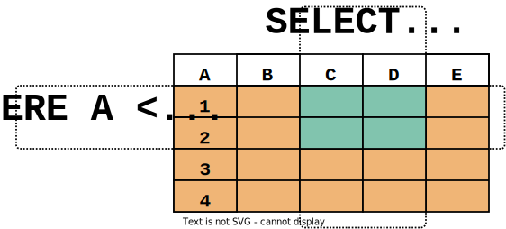

SQL Introduction
This tutorial is reworked from the DuckDB tutorial.
Overview
This page provides an overview of how to perform simple operations in SQL. This tutorial is only intended to give you an introduction and is not a complete tutorial on SQL.
All queries use the internal sample NASA datasets and should work regardless of the data your installation and set up has access to.
Concepts
Opteryx is a system for querying ad hoc data stored in files as relations. A relation is mathematical term for a data table.
Each relation is a named collection of rows, organized in columns, each column should be a common datatype.
As an ad hoc query engine, the relations and their schema do not need to be predefined, they are determined at the time the query is run. This is one of the reasons Opteryx cannot be considered a RDBMS (relational database management system), even though it can be used to query data using SQL.
Querying Relations
To retrieve data from a relation, the relation is queried using a SQL SELECT statement. Basic statements are made of three parts; the list of columns to be returned and the list of relations to retrieve data from, and optional clauses to shape and filter the data that is returned.
The * is shorthand for "all columns", by convention keywords are capitalized, and ; optionally terminates the query.
The output of the above query should be
You can write functions, not just simple column references, in the select list. For example, you can write:
This should give:
Notice how the AS clause is used to relabel the output column. (The AS clause is optional.)
A query can be “qualified” by adding a WHERE clause that specifies which rows are wanted. The WHERE clause contains a Boolean (truth value) expression, and only rows for which the Boolean expression is true are returned. The usual Boolean operators (AND, OR, and NOT) are allowed in the qualification.
The SELECT clause can be thought of as choosing which columns we want from the relation, and the WHERE clause as choosing which rows we want from the relation.

For example, the following the planets with fewer than 10 moons and a day longer than 24 hours:
Result:
name | lengthOfDay | numberOfMoons
--------+-------------+---------------
Mercury | 4222.6 | 0
Venus | 2802 | 0
Mars | 24.7 | 2
Pluto | 153.3 | 5
The order of results are not guaranteed and should not be relied upon. If you request the results of the below query, you might get the Mercury or Venus in either order.
Note
The same query, of the same data in the same version of the query engine will likely to return results in the same order, don't expect to test result order non-determinism by rerunning the query millions of times and looking for differences. These differences may manifest over different versions, or from subtle differences to the query statement or data.
Result:
name | lengthOfDay | numberOfMoons
--------+-------------+---------------
Mercury | 4222.6 | 0
Venus | 2802 | 0
But you’d always get the results shown above if you do:
You can request that duplicate rows be removed from the result of a query:
Result:
Here again, the result row ordering might vary. You can ensure consistent results by using DISTINCT and ORDER BY together:
Joins Between Relations
So far our queries have only accessed one relation at a time. Queries can access multiple relations at once, or access the same relation in such a way that multiple rows of the relation are being processed at the same time. A query that accesses multiple rows of the same or different relations at one time is called a join query.
As an example, say you wish to list all the $satellites records together with the planet they orbit. To do that, we need to compare the planetId of each row of the $satellites relation with the id column of all rows in the $planets relation, and return the pairs of rows where these values match.
This would be accomplished by the following query:
$satellites.id | planetId | $satellites.name | ...
---------------+----------+------------------+----
1 | 3 | Moon |
2 | 4 | Phobos |
3 | 4 | Deimos |
4 | 5 | Io |
5 | 5 | Europa |
(more rows and columns)
Observe two things about the result set:
There are no result row for the planets of Mercury or Venus (planetIds 1 and 2). This is because there is no matching entry in the $satellites relation for these planets, so the join ignores the unmatched rows in the $planets relation.
Each of the relations being joined have an id and a name column, to ensure it is clear which relation the value being displayed is from, columns with clashing names are qualified with the relation name.
To avoid abiguity and problems in the future if new columns are added to relations, it is good practice to qualify column names in join conditions:
Will return the same result as above, but be more resistant to future failure.
Join queries of the kind seen thus far can also be written in this alternative form:
The planner currently uses a different execution strategy for these two similar queries, the explicit INNER JOIN style generally executes faster.
Now we will figure out how we can get the Mercury and Venus records back in. What we want the query to do is to scan the $planets relation and for each row to find the matching $satellites row(s). If no matching row is found we want some “empty values” to be substituted for the $satellites relations columns. This kind of query is called an outer join. (The joins we have seen so far are inner joins and cross joins.) The command looks like this:
$satellites.id | planetId | $satellites.name | ...
---------------+----------+------------------+----
| 1 | |
| 2 | |
1 | 3 | Moon |
2 | 4 | Phobos |
3 | 4 | Deimos |
4 | 5 | Io |
5 | 5 | Europa |
(more rows and columns)
Using the LEFT OUTER JOIN will mean the relation mentioned on the left of the join operator will have each of its rows in the output at least once, whereas the relation on the right will only have those rows output that match some row of the left relation. When outputting a left-relation row for which there is no right-relation match, empty (null) values are substituted for the right-relation columns.
Note
How null values are displayed may be different between different systems, common approaches are to display an empty cell or display 'none' or 'null' in an alternate format (e.g. italics or different font color). This is not controlled by the query engine.
Aggregate Functions
An aggregate function computes a single result from multiple input rows. For example, there are aggregates to compute the COUNT, SUM, AVG (average), MAX (maximum) and MIN (minimum) over a set of rows.